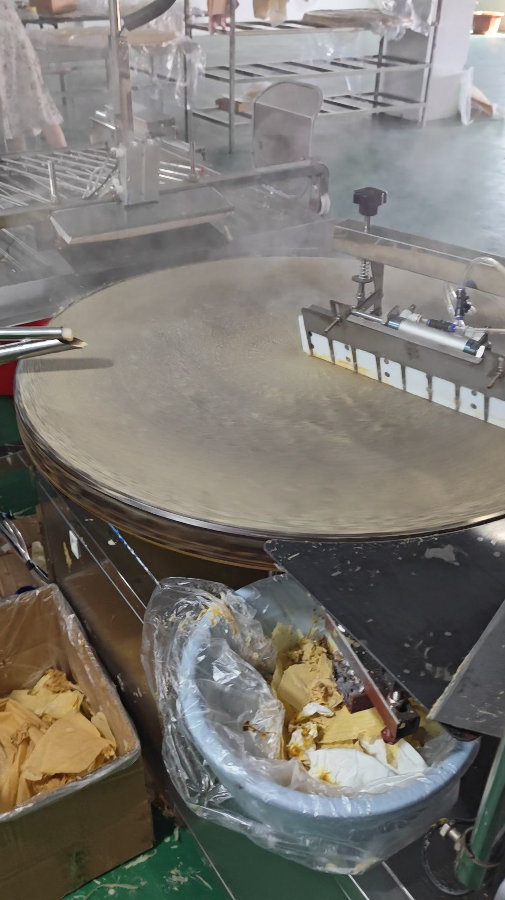
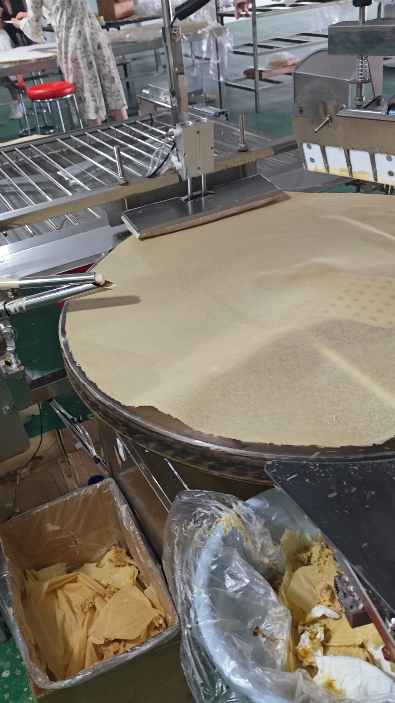

全自动煎饼机 900 型
主力机型。自动上浆、旋转摊饼、稳定出饼，一人可看一台机，适合规模化生产。
鏊子直径 900mm
单张 100g
下面三套是常见配置。具体机型、产能、电压和场地要求，告诉我们你的实际情况，我们出方案。
主力机型。自动上浆、旋转摊饼、稳定出饼，一人可看一台机，适合规模化生产。

适配发酵浆料，薄饼摊得开、边缘完整不破，适合传统煎饼加工和配送。

厚薄可调、单张更实，适合做主食、夹料和餐饮供应链供货。
60 秒车间实录，没有剪辑特效，就是机器在干活。